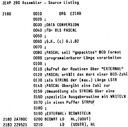

80-Bus Journal |
April 1983 · Ausgabe 4 |
Ich kann mich den Lobliedern von Michael Bach über das BLS-Pascal nur anschließen, nachdem ich meine ersten Programmierversuche hinter mir habe. Es handelt sich bei dieser Pascal-Version zwar nur um eine Untermenge des Standard-Pascal, dafür aber um einen echten Compiler (kein Zwischencode). Der compilierte Code ist schnell und etwa um den Faktor 2-4 mal umfangreicher als optimal assemblierter Code. Dafür braucht man aber eine Fülle von Funktionen nicht jedesmal neu zu programmieren wie beim Arbeiten in Assembler. Die Programmierzeit verkürzt sich entsprechend. Besonders hervorzuheben sind die Stringfunktionen (in Standard-Pascal nicht enthalten), die 11-stellige Rechengenauigkeit und die Kombinationsmöglichkeiten mit Maschinenprogrammen über die Befehle CODE, EXTERNAL, CALL und MEM. Diese Kombinationsmöglichkeit soll hier an einem Beispiel gezeigt werden.
In kaufmännischen Anwendungen rechnet man häufig mit B(inär)C(odierten)D(ezimal)-Zahlen, wobei je ein Halbbyte eine Stelle mit einem Wert zwischen 0 und 9 enthält. Rechenroutinen für ein solches „gepacktes“ BCD-Format habe ich im Nascom-Journal 1 und 7/8-82 vorgestellt. Die meisten Interpreter und Compiler können aber das BCD-Format nicht verarbeiten (im neuen ANSI-BASIC-Standard wird aber die Darstellung der Zahlen im BCD-Format vorgeschrieben!), so auch das BLS-Pascal. Es gibt nun verschiedene Möglichkeiten, hier Abhilfe zu schaffen. Man könnte die Rechenroutinen für BCD-Zahlen als Externals definieren und so den Pascal-Befehlssatz erweitern, man kann aber auch einfach die Datenformate ineinander umsetzen. Auch hiefür gibt es zwei Möglichkeiten: Man könnte ein Maschinenprogramm schreiben, das direkt BCD-Code in Binärcode umrechnet und umgekehrt. Ich habe hier aber den einfacheren (und langsameren) Weg gewählt, wobei jedes Zahlenformat zunächst in „Klartext“, d.h. in einen String umgewandelt wird und dieser String dann wiederum in das andere Zahlenformat. Dabei wird die Funktion „VALUE“ aus dem BLS-Programming-Manual verwendet, die zu diesem Zweck aber verändert werden mußte. In der im Manual abgedruckten Form ist sie sowieso falsch; außerdem kann sie auch keine führenden Leerstellen verkraften. Die Stellenzahl des BCD-Formats kann vorgegeben werden mit folgenden Einschränkungen: Es wird die Anzahl in Bytes festgelegt, wobei jedes Byte zwei Stellen aufweist; es sind fest zwei Nachkommastellen vorgegeben, wie sie im kaufmännischen Rechnen benötigt werden; das „vorderste“ Halbbyte enthält das Vorzeichen (0 = +, 1 = −). In drei Bytes kann man so die Zahlen von −999.99 bis +999.99 unterbringen. Das Fließkommaformat des BLS-Pascal benötigt 6 Bytes pro Zahl. In einem Fakturierprogramm konnte ich durch Verwendung des BCD-Formats (dringend benötigte) 6 KByte Speicherplatz einsparen.
Es müssen 3 EXTERNALS definiert werden, die hier im Assemblerlisting aufgeführt sind. BCDWRITELN schaltet eine Ausgaberoutine (über UOUT) ein. Jetzt kann mit WRITELN die Zahl (REAL) in einen Puffer geschrieben werden. CONVERTA (Länge in Bytes) verwandelt den String im Puffer in eine BCD-Zahl und übergibt die Anfangsadresse dieser Zahl dem aufrufenden Pascal-Programm zur Weiterverarbeitung. CONVERTB (Länge in Bytes, Adresse der BCD-Zahl) wandelt die BCD-Zahl in einen String um, der dem aufrufenden Pascal-Programm übergeben wird. Die Pascal-Funktion VALUE wandelt wiederum den String in eine Zahl vom Typ REAL um. Aus diesen Hilfsfunktionen sind die vollständigen Umwandlungsfunktionen zusammengesetzt. CONVERT.BCD wandelt eine Zahl vom Typ REAL in eine BCD-Zahl um, deren Adresse im Speicher als Ergebnis der Funktion übergeben wird. BCD.CONVERT(L,A) berechnet aus einer BCD-Zahl der Länge L (in Bytes) an der Adresse A den zugehörigen Zahlenwert vom Typ REAL.
| Seite 24 von 28 |
|---|